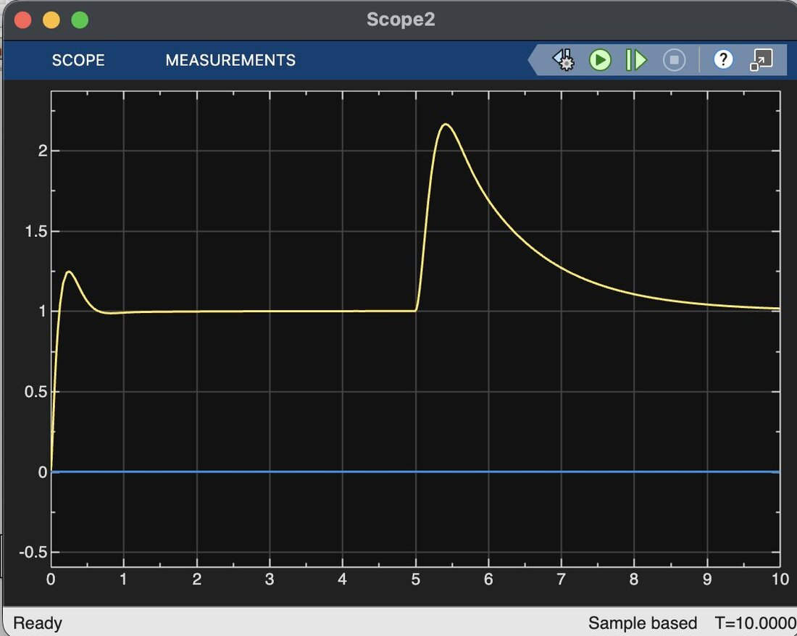
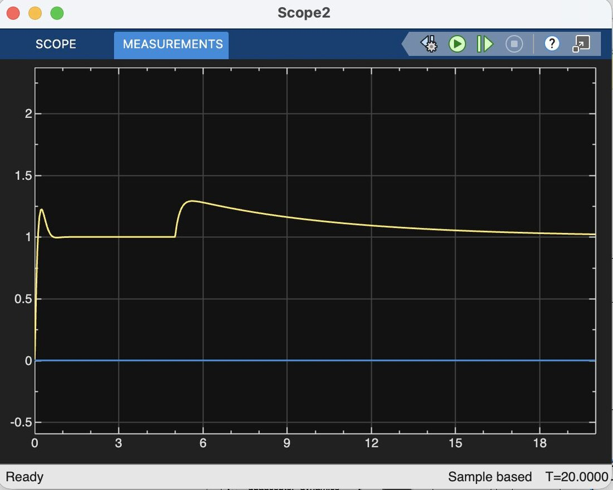
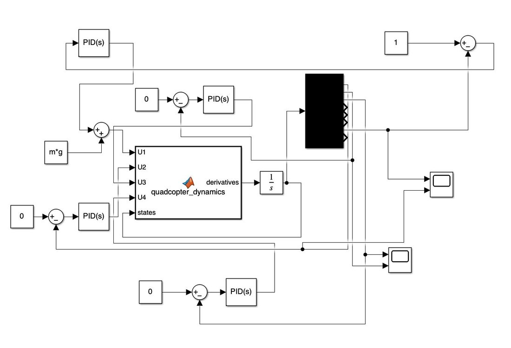
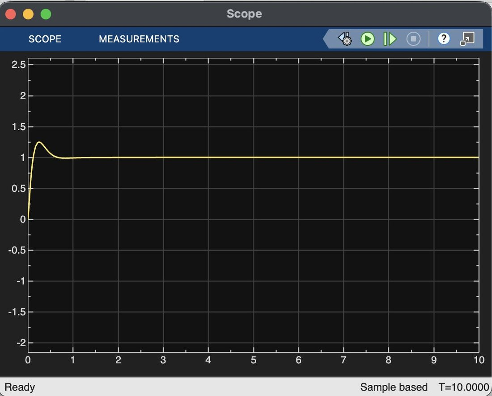
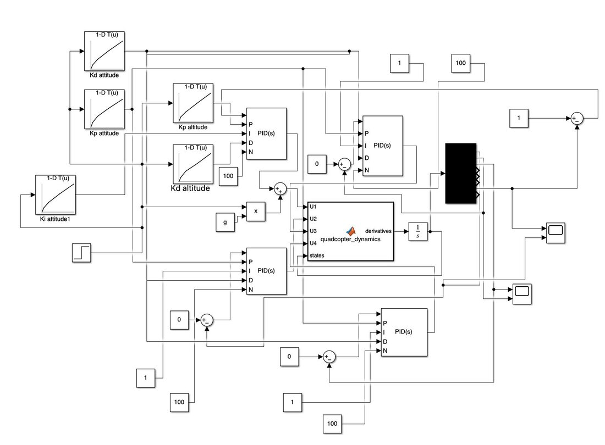
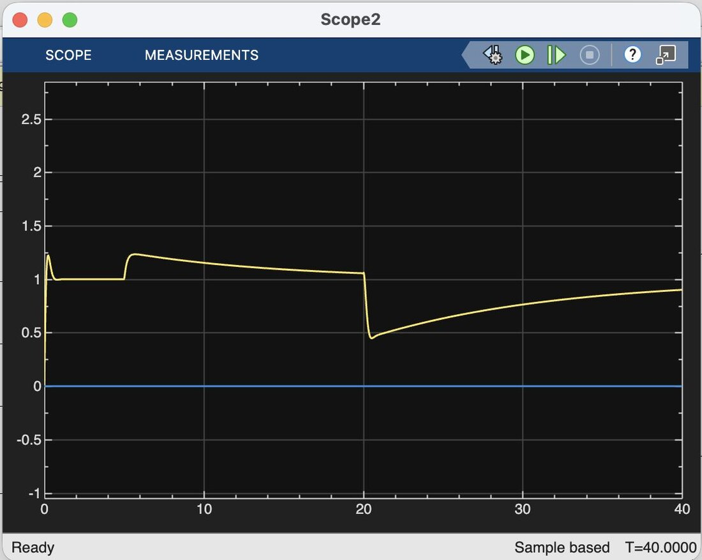

Adaptive Gain-Scheduled PID Quadcopter


Overview
A delivery drone's mass changes every time it picks up or drops off a package, but a standard PID controller is tuned for one fixed mass. We replicated a published quadcopter model and PID controller (Sahrir & Basri, Modelling and Manual Tuning PID Control of Quadcopter), showed where it breaks down under payload changes, and extended it with gain scheduling so the controller adapts to the current payload.
How we built it
We added one layer at a time and validated each before moving on.
- Model: implemented the paper's Newton–Euler equations of motion in Simulink, taking total thrust and three torques as inputs and integrating to all 12 states (position, orientation and their rates).
- Open-loop check: with thrust exactly equal to weight (m·g) the drone hovers, and ±1 N makes it diverge up or down, confirming the dynamics before adding control.
- Baseline control: four PID loops (altitude, roll, pitch, yaw) using the paper's tuned gains. A 1 m altitude step gives fast rise, small well-damped overshoot and zero steady-state error.
- Payload variation: stepped the mass from 0.5 kg to 0.8 kg (1.6×) and to 5 kg (10×) mid-flight.
- Gain scheduling and full operation (pickup and drop-off), described below.


Where fixed gains fail
The baseline handles the small 1.6× payload change well, but a 10× jump breaks it: altitude spikes to about 2.15 m against a 1 m setpoint (~115% overshoot) and recovers slowly. Our analysis pointed to integrator windup driving the thrust too high.
Gain scheduling
A delivery drone knows roughly what it's carrying, so the controller can switch gains before the error builds up. We replaced the fixed PID gains with lookup tables indexed by current mass, interpolating between breakpoints, and added integrator limits as anti-windup.
| Mass (kg) | Kp altitude | Kd altitude | Ki altitude |
|---|---|---|---|
| 0.5 | 35 | 6 | 3 |
| 0.8 | 50 | 9 | 5 |
| 1.5 | 70 | 13 | 7 |
| 3.0 | 100 | 18 | 10 |
| 5.0 | 150 | 25 | 14 |
Attitude gains (roll, pitch, yaw) were scheduled the same way. With scheduling, the 10× payload jump peaks at ~1.3 m instead of ~2.15 m (about 28% vs. 115% overshoot). The trade-off is a longer settling time, but a much smaller disturbance.

Full delivery cycle
Finally we simulated a complete delivery: picking up a package (0.5 → 3 kg) and dropping it off later (back to 0.5 kg). The controller held altitude through the pickup. The drop-off caused a larger dip (to about 0.45 m) with a slow recovery, which is the main target for future tuning.

Next steps
- Tune gains specifically for payload drop-off, and handle several pickups and drop-offs in a row.
- Model mass changes more realistically (not instantaneous), and add feedforward gravity compensation, air disturbances and off-center package drops.
- Try it on a real drone.